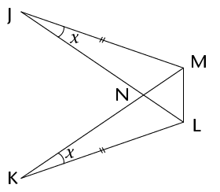
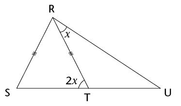
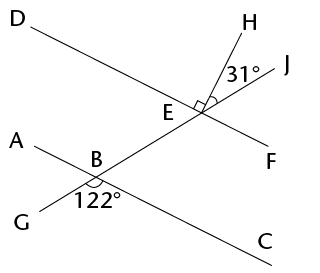
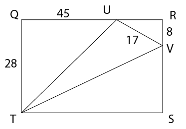

Assessering
- Konstrueer driehoek RST met RS = 7,3 cm, \(\hat{R}\) = 42\(^\circ\); en \(\hat{S}\) = 67\(^\circ\).
Konstrueer die halveerlyne van elk van die hoeke van die driehoek wat jy in (a) geteken het. Jy behoort te vind dat hulle deur ’n gemeenskaplike punt gaan.
- Met die gemeenskaplike snypunt van die halveerlyne wat jy in (b) gekonstrueer het as middelpunt, konstrueer ’n sirkel wat al drie sye van die driehoek raak. Gebruik jou passer om die sirkel te trek.
- Is dit altyd moontlik om ’n driehoek te teken as die lengte van een van die sye gegee word en die groottes van die twee hoeke wat aangrensend aan daardie sy is, gegee word (soos byvoorbeeld in vraag 1(a) gedoen is)? Verduidelik jou antwoord.
- Konstrueer ’n hoek van 150\(^\circ\)sonder om ’n gradeboog te gebruik.
- Mthunzi dink aan ’n vierhoek en gee vir Sam dié leidraad: “Die hoeklyne sny
mekaar loodreg, maar die sye is nie almal ewe lank nie.” Help vir Sam deur die
naam van die figuur neer te skryf.
- Kyk na die figuur hier onder. Skryf ’n vergelyking neer en gebruik dit om die
waarde van
\(x\) te bepaal.

- Bewys dat \(\triangle\)JNM
\(\equiv\)
\(\triangle\)KNL. 
- Is daar genoeg inligting om te bewys dat \(\triangle\)JLM \(\equiv\)
\(\triangle\)KML? Verduidelik jou
antwoord.
- Kyk na die diagram hier regs.
Gegee: \(\triangle\)CDE \(\equiv\) \(\triangle\)FCG, Bewys dat ED \(||\) GF. Gee redes vir alle bewerings.


- Verduidelik kortliks hoekom
\(\triangle\)ABF \(|||\) \(\triangle\)ACD (volle bewys nie vereis nie).
- Gebruik die gelykvormigheid van die driehoeke om die lengte van die volgende
lynstukke te bepaal (afgerond tot een desimale plek):
-
\(x\)
- \(y\)
-
\(x\)




- Bereken die lengte van UT.
- Bereken die omtrek van driehoek TUV, afgerond tot een desimale plek.

- Bereken die lengte van ’n sy van die ruit.
- Bewys dat die ruit se oppervlakte 216 cm2 is.